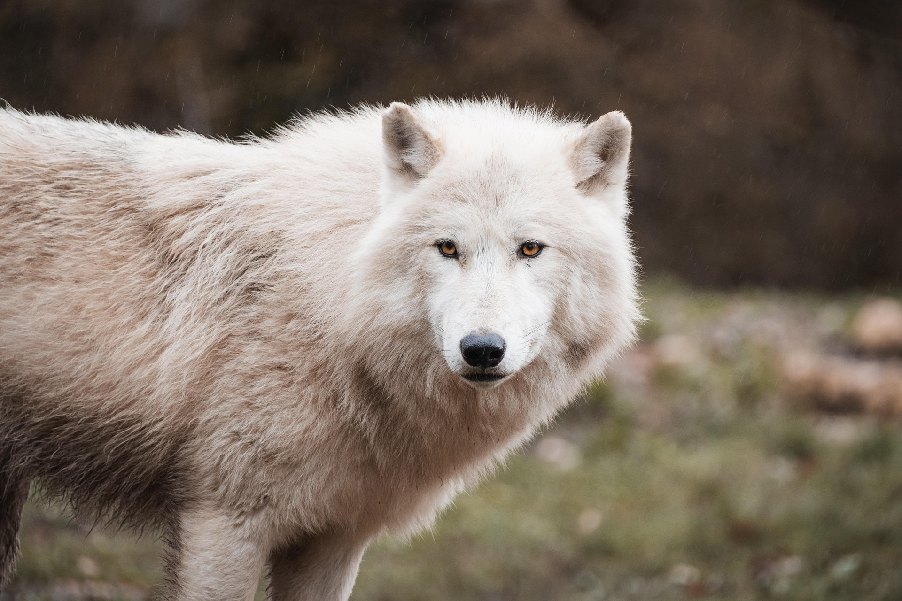

O
Lobo-Ibérico
é uma subespécie do lobo-cinzento que ocorre na Península Ibérica. Outrora muito abundante, sua população atual deve rondar os 2000 indivíduos, dos quais cerca de 300 habitam o Norte de Portugal.